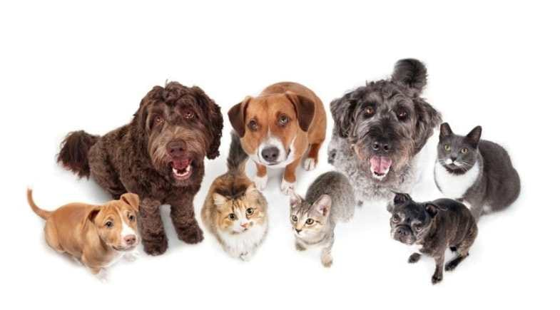

Como atuamos
Contamos com uma rede de voluntários, parcerias com clínicas veterinárias e apoio da comunidade para viabilizar nossos projetos de resgate, castração e adoção.

A Terra dos Bichos é uma organização sem fins lucrativos dedicada a resgatar, cuidar e encontrar novos lares para cães e gatos em situação de abandono.
Trabalhamos todos os dias para reduzir o número de animais abandonados nas ruas, promovendo resgate responsável, cuidados veterinários e conscientização sobre a posse responsável de animais de estimação.
Contamos com uma rede de voluntários, parcerias com clínicas veterinárias e apoio da comunidade para viabilizar nossos projetos de resgate, castração e adoção.
Desde a fundação da ONG, já ajudamos centenas de cães e gatos a encontrarem um novo lar.
Realizamos campanhas mensais de castração em bairros de baixa renda.
Conheça nossos projetos ou cadastre-se como voluntário e ajude a transformar a vida de muitos animais.